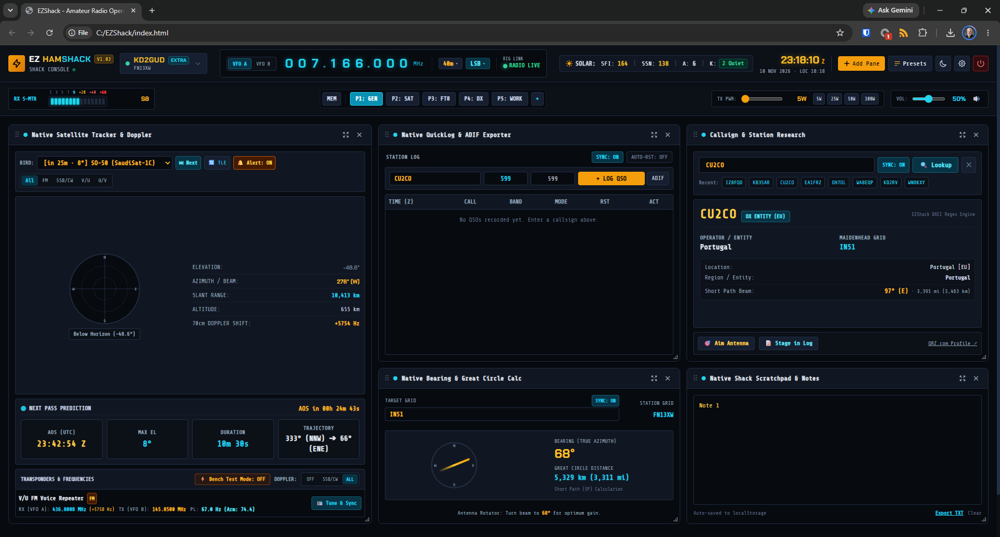

Consolidate satellite tracking, instant log synchronization, Callsign lookups, and bearing calculations into a single dark-mode dashboard—backed by a local, fast Python daemon. No cluttered windows, no compromises.

Native asynchronous Python serial driver (`pyserial`) featuring hardware-calibrated pacing and relay settling delays. Control your transceiver without relying on FLRIG or legacy intermediaries.
Compute SGP4 orbital propagation, view dynamic next-pass predictions, and monitor elevation, azimuth, and slant range using an HTML5 Canvas polar radar. Automatic transponder Doppler frequency compensation and split tone management keep tuning hands-free.
Integrated callsign verification utilizing the FCC Callook API alongside offline DXCC algorithms. View location data, short-path beam headings, license statuses (Technician, General, Extra), and expiry info instantly.
Direct, real-time sync with C:\ezshack\shack_log.adi. Safely read, add, and broadcast logs. Built-in security with three-point composite key validation prevents accidental database deletion.
Dynamic bearing calculation from target grid squares compared to your hometown locator. Animated direction compasses verify visual beam angles instantly for your antenna rotator.
Stay on top of live solar metrics (SFI, SSN, A & K indexes), monitor on-air status, capture instant scratchpad notes stored to browser `localStorage`, and monitor band privilege edge boundaries based on License types.
| Model | Status | CAT Engine | Dual-Watch / Sub-RX | Satellite Automation |
|---|---|---|---|---|
| Yaesu FT-991A | Supported | Native (38400) | N/A (Single VFO) | Automated |
| Kenwood TS-2000 | Supported | Native (9600) | Full Sub-VFO | Automated |
| Icom IC-7300 | In Development | CI-V Protocol | N/A (HF/6m) | N/A |
Download or Clone
Clone the repository using Git or extract the standard release ZIP onto your hard drive:
git clone https://github.com/KD2GUD/EZHAMShack.git cd EZHAMShack
Double-click install.bat
Run the automated environment installer. It scans for a valid Python runtime (or automatically installs Python 3.12 via winget), isolates a dedicated virtual environment (.venv\), resolves serial and communications libraries, sets up C:\ezshack\ for logging storage, and generates a launcher icon on your desktop.
Double-click Your New Desktop Shortcut
Simply launch the app through your desktop icon or run launcher.bat inside the workspace folder. Your default web browser will open with the dashboard.